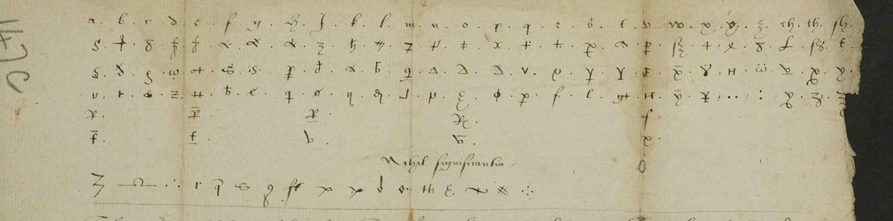

01 The letter and the key
R8499 has six images: ff. 8r, 8v, 9r and 10v of Harley MS 1582 and two binding views. The hand is Wotton’s, the address is to the Queen, and the close reads “And thus I beseech Jesu long to preserve your highness”. The body is cipher, about 3,200 signs, with clear-text pieces between the runs (“the king being then in his journey … the Court resting as yet nowhere”, “declaredde unto him your highness pleasure”). The letter is not in the Calendar of State Papers Foreign, Mary, which gives only Wotton to Petre, Soissons, 14 June, and later letters to the Queen from SP 69.
The key is DECODE R354, a single sheet in TNA SP 106/2 f. 162 headed “France 1554”. It gives three to six homophones for each letter, a row of nulls (“Nihil significantia”), and a nomenclator whose entries fit Wotton’s embassy that spring: the Emperor, the Queen’s Highness, the French king, the Constable, Peter Carew, the rebels, my Lady Elizabeth, the Earl of Devonshire, the Prince of Spain, Strozzi, Siena, Guisnes, Calais, the Low Countries, “fair words”, and short words (and, the, of, to, was, shall, have, hath, it, is). The signs and nulls of R8499 are those of R354.

02 The decrypted text
The text below follows the letter in order, in modern punctuation and the spelling as decrypted. Square brackets with a number mark signs not decrypted; words in italics are tentative (grade C or M). The line-by-line decryption, with the signs, is final_v8.txt in the repository.
f. 8r: Carew at Compiègne
Pleasing it your highness to understand that Carew was at Compiegne and spake of with the French king, the rebels, with the Constable, and Carew. I am enformid Carew saith [1] he have had meny gentle and fair words … the Constable tooke it [4] that the French king had gyven him … and where Carew requyred that the band of the rebels should have the Emperor’s wagis … the Constable comenid with him how the ysle of Wight might be taken [7] … and how it might be kept. The rebels finallye, Carew advertisith me, they have concludid that … to attempt against your highness … the Prince of Spain’s coming … in the Low Countries … He the French king hath encreasidde the pensions of dyvers of the rebels … of the Cardinal Farnese, who shewing him much favour … two hundred … crownes and nothing other, likewise … offerid fowre hundrid and the leading of a band, yf him list, as he saithe.
f. 8v: the rebels’ plans
The rebels may dwel in France where they be, and the Emperor’s pensions to continew til the time the French king may restowr them to the Emperor’s countre … the Emperor’s ambassador sent me word that whereunto cam of late a servant of Carew to him out of the Low Countries, who shall that certein gentlemen home send him word that … in the west partis they … to take part with them … and that they [1] take Plymtown [5] and keep it rady … The king being then in his journey, the Court resting as yet nowhere, so as I could … I wold first make a step to Paris ere I went, to talk secretly with … and to advertys him of your highness’ mind … I found the meanes to talk with him in a [2] place and declaredde unto him your highness’ pleasure concerning him … he must first speak with Carew ere he could take [1] to him. The effect of his answer was these: first … the resolucion taken betwen the Constable and Carew [6] … the Constable, being enformedde that Carew was departid [from] Compiegne, satisfied, had sent the lord [16] to him to … meny fair words, and to shewe him that the rebels’ band shulde have theyr wagis.
f. 9r: the repentant rebel
… for lack of money … charges offred, and he would not entre in service to the French king … he did receve money of him, he could not find in his heart that they be untrew to him; and besides that, he doubting lest it be known that he gyveth me advertsmentes … would be gladde to depart this shortly; and although he sayde he took me to be an honest manne, and therfore did not mistrust my wordes … what kind of effect your highness wolde requyre of him to be done … that it were perceived that he wente abrode to attempt the Emperor against the French king … he came not fynde in his herte to return into England. He thinkith that your highness can not forget this offence … and in case your highness could forget it, yet he reckening assuredly that the French king will [not] forget it … so that, being persuadedde that he can not lyve in England without [pardon] of this, he entendeth not to return … that it would please your highness to give him … and suffer him to have a gentlemanes lyving in [2] countrey … He entendith not to open the circumstances of this fawte … if he must detect meny gentelmen, who, remaining unknown, may live honestly at home.
f. 10v: Cornwel, the lantzknechtes, Saint-Quentin
This is th’effect of … He shewed me that one Cornwel is rover to late and … I have not yet spoken with him … the said Cornwel … For he doutith whether he may trust him, for he was longing to the lord [4] … There is one who calling him self Greneberye, who hath been twyse offred … the first tyme they toke him for a spye … and besides that, this felaw who cam with him the first declared to Carew what he was and where … the Emperor’s sisters; Carew namid to be twenty enseignes, and lye abowte Laon, of new lantzknechtes … not the third part … passid within a myle of this towne fifty and nine canone. It is told me that … Paris, and it semith to take the way towardes Saint Quintin … what the Emperor’s intent is, is kept [2]. It is thought that the French king will be in the camp him[self] … whether the Emperor be strong to meete them. The Constable hath ben sike and is not yet [1] strong. The Duke of Gwyse [7] … And thus I beseech Jesu long to preserve your highness …
03 Method
- Identification. The opening and close in clear name the Queen; the hand and the signature fix Wotton; the BL catalogue record and the Harleian catalogue of 1808 give Soissons, 13 June 1554.
- Transcription. A first sign transcription (3,212 signs, 158 types) was made before the key was found. A homophonic annealer on the
en-1640smodel, validated on synthetic controls, failed blind: the nulls and word codes defeat it. - Key. The key sheet R354 was found on DECODE among the SP 106 keys and transcribed (
key_R354.md). With its nulls removed and its letter and code values fixed, the text began to give sense (“Compiegne and spake of … the rebels with the Constable”). - Re-transcription. Several first-pass tokens merged distinct key signs (ω d and and; the French king and “your highness”; the barred and plain x). They were split sign by sign on the images (v2), then every page was re-transcribed at full resolution (v5).
- Unified key and nomenclator. Page-by-page keys were merged into one (v6), all ~140 nomenclator entries were transcribed and tested against every unread stretch (v7), and a shape pass separated the upright and arched triangles and the barred and plain C (v8).
- Measure. Each pass was counted on non-null signs: 47%, 65%, 72%, 75%, 75% firm. The last two passes added no firm values.
| page | non-null signs | firm | incl. tentative |
|---|---|---|---|
| f. 8r | 734 | 66.6% | 86.1% |
| f. 8v | 683 | 75.1% | 90.0% |
| f. 9r | 709 | 81.8% | 90.6% |
| f. 10v | 683 | 76.9% | 91.4% |
| all (v8) | 2,801 | 75.0% | 89.4% |
(The page rows are the v7 count on 2,809 signs; v8 removed two doubly transcribed signs and relabelled others without changing the totals.)
04 What remains uncertain
- About a quarter of the non-null signs are not decrypted or are tentative: short runs on f. 8r (lines 13–15, 18, 24), the name after “the lord” on f. 8v (16 signs; perhaps “Brymstane”, Crichton of Brunstane, a Scot: M), the name after “the Duke of Gwyse” on f. 10v (“Gaspard”?: I), “Greneberye” (M), and the code
Ie, taken once as “the Emperor’s ambassador” (M). Blocker: the contemporary deciphered copy, Harley MS 1582 ff. 5r–7v, is not digitised by the BL or on DECODE and needs an imaging order. - About forty rare code signs (
.I .p .d .M N. R., the C with cedilla, the tailed Q, the tall looped f, the large circle) match no legible cell of R354, the only surviving copy of the key. The dotted N and R codes are probably names added to Wotton’s copy and missing from this one. Tested against the nomenclator and rejected:.ITherouanne,.MTrent,-P, the script y as “either”. - Tentative code values:
.Z= that,T.= me,L2= Calais (C). Firm:4= that,B.= of,.B= not, dotted y = yet, small circle = hath. - Grades of the connected passages: the Carew–Constable narrative of f. 8r, the rebels’ wages and pensions, and the repentant rebel on f. 9r are H; the Isle of Wight and Plymouth are H for the place names, C for the verbs; the Farnese and Greneberye names are M.
05 Sources
- British Library, Harley MS 1582 ff. 8r–10v (DECODE R8499); BL catalogue record 040-002047412 (ff. 5r–7v “probably a contemporary copy deciphering the letter of ff. 8r–10v”).
- Key: The National Archives, SP 106/2 f. 162, “France 1554” (DECODE R354).
- A Catalogue of the Harleian Manuscripts in the British Museum, vol. 2 (1808), pp. 138–139, no. 1582 (archive.org).
- Calendar of State Papers Foreign, Mary (1861), June–July 1554 (British History Online): not calendared. P. F. Tytler, England under the Reigns of Edward VI and Mary, vol. 2 (1839): not printed.
Notes, the transcriptions, every key version, the nomenclator and the measured decryptions are in harley1582r8499/.